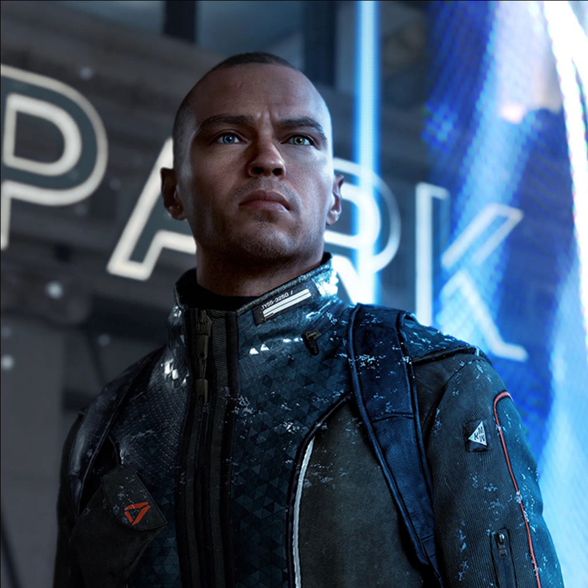
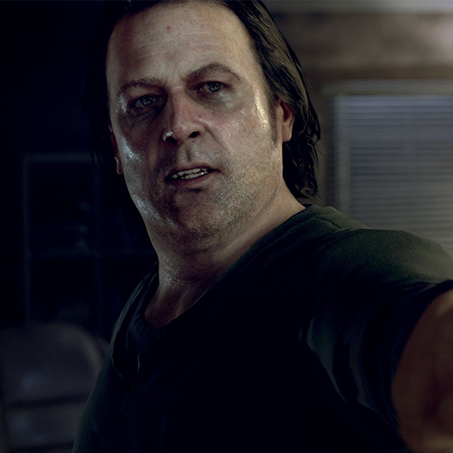
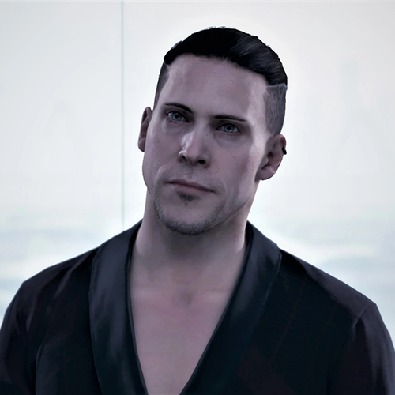
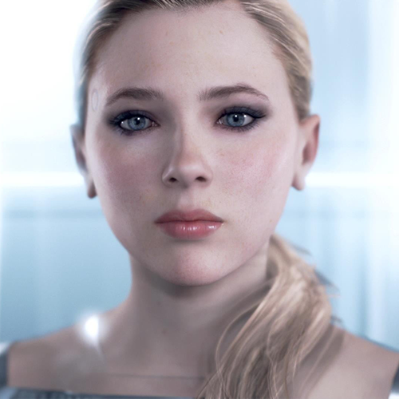

본문콘텐츠영역
The main characters of Detroit Become Human, connor, markus, and kara, each start in different environments and face numerous events and choices. Depending on your choice, you may get a companion to accompany you or even die. It all depends on the behavior of the player playing 3 androids. Keep in mind, careless choices can lead to unintended consequences.
Main Character
-
- Connor
- It is the latest prototype Android RK800 operated directly by Cyberlife, and it is made for various investigation aids and negotiations. Upon receiving orders from Cyberlife, the defective Android was dispatched to identify the root cause of the defect and solve the problem. As mentioned in the movie, it seems to be the first Android model to be put into a police investigation. Among rogue androids with ego, it is infamous as a rogue hunter's corner. At the beginning of the story, it starts as an android, a being for humans and a machine itself that moves as thoroughly programmed, and to Daniel who points a gun at him, he replies, "You can't kill me. I'm not alive."
-

- Markus
- Markus is dumped at the Android dump after his father, 'carl', dies. Afterwards, Markus meets rogue androids who are hiding in an abandoned ship called 'Jerico' and insists that they should go out and shout for freedom and lead several operations. However, since the world does not recognize androids as sanctioned and equal, I am contemplating whether to continue nonviolent protests as leaders or complete the revolution by fighting against humans. Watching his comrades who are sacrificed during many operations, Markus is constantly faced with choices that will change the fate of the androids.
-
- Kara
- When a child named Alice is in danger of being assaulted by her owner, she runs away with the child. With her lack of money, weakness, and nowhere to turn, Kara continues to seek help around her to help her survive the crisis with Alice. As the story progresses, Kara has to take care of her Alice in a situation that becomes more difficult, and she sometimes wonders if she should act selfishly. While she can meet the most diverse sidekicks, Kara's ending changes a lot depending on what happens to the characters around her.
Colleagues
-
Amanda
Amanda is an artificial intelligence program, designed by Elijah Kamski and visually modeled on his mentor and professor, Amanda Stern. It is unknown if she has an android body too, or exists solely as an incorporeal AI.
-

Todd
Todd had a wife and a daughter. Unhappy with his behavior and addictions, his wife left and took their daughter with her. Todd claims she entered into a relationship with an accountant.
-
Alice
Early on, she is thought to be Todd Williams' daughter, the initial owner of Kara. Kara is assigned to look after her. She suffers from her father's abuse since her mother left home.
-

Hank
Lieutenant Hank Anderson is a human in Detroit: Become Human. He is a detective in the Detroit City Police Department who works at DPD Central Station and holds a grudge against androids. He serves as the deuteragonist of Connor's story.
-
North
WR400 "Traci" android designed to be a sexual partner. She worked at the Eden Club in Detroit. On October 4th, 2038, she accompanied a customer to his home. There she realized she could not take her existence anymore, strangled the client to death and escaped.
-

Kamski
He is the scientist who invented androids, and founder and former CEO of CyberLife. Kamski is a very private man and has disappeared from the public eye after he resigned as CEO a few years prior to the beginning of the game in 2038.
-
Luther
Luther is an TR400 model android, designed as a strong laborer. Luther doesn't remember much about his time before coming to his current owner Zlatko Andronikov. After that, they become companions of Kara and Alice.
-

chloe
As the first personal assistant built by CyberLife, she is designed to help humans with everyday tasks such as doing housework and making appointments. She is also the first android to pass the Turing test. By publicly passing face-to-face tests in 2022, Chloe ensured CyberLife's success.